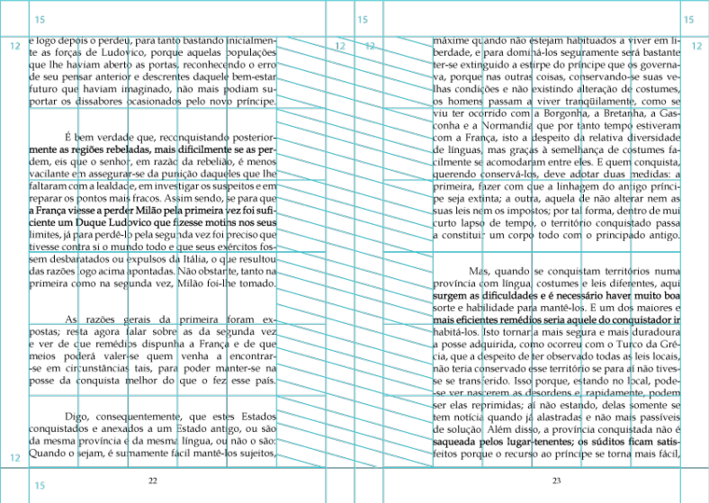
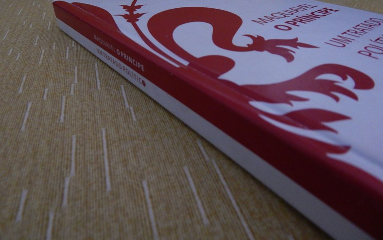
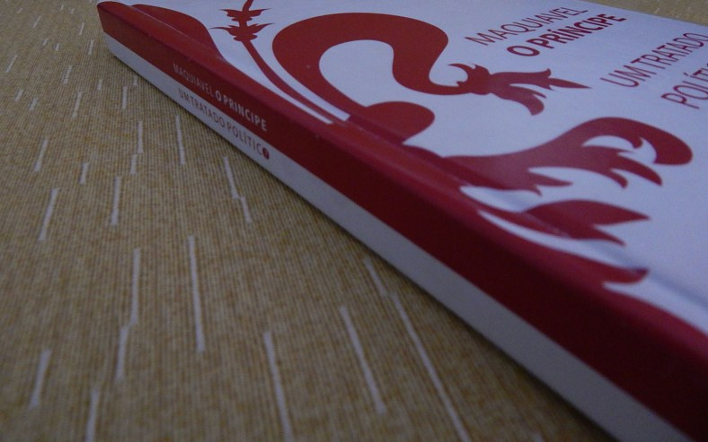

Maquiavel - O Príncipe
I developed this visual project as a concept work for the book "The Prince", by Niccolò_Machiavelli.
The idea was to present a celebrative version of its 500 years, bringing the question: "was "The Prince" a political work made for kings to rule, or was it aimed at educating the people against tyranny.
Starting at this idea, I further developed most of its visual elements in order to suggest that question through duality. Since the colors of Florence's symbol, to the forms and grids. Some examples follow below.
The Hardcover

Through research, the symbol of Florence stood out as a strong icon for the work. While vectorizing the symbol, I worked a little specially on its curves to make them more subtle.
I opted for the colors red and white, because while they make reference to the original symbol, in our culture, they are also good representations for the duality between violence and blood against order and peace.
When working with the cover layout, I opted to wrap the text around the symbol to make it stand out and also because of the visual appeal. The word "político" was worked with the idea that this celebrative version of the book could be gift along with a bottom symbolizing its central idea, with the letter "o" representing the question and the duality, further promoting its visual identity.
The Font

I was looking for a font wich I had familiarity with, but it also needed to provide good reading in long texts. Among the ones I researched, I chose "Book Antiqua", since its a well structured font for reading that has serif, matching my criteria.
Inner Layout
One thing that annoys me when reading books is when their text bends into the pages because the margin isnt big enough to accomodate it. Even when that doesnt happen, sometimes the margins are just too thin and you cant hold the book page with your fingers without covering part of the text. Thinking further on the matter, I designed the margins with a special care, while trying to allow my thumb to confortably sit inside the book center without covering parts of the text (this is my favorite reading stance).


I worked on the margins seeking that possibility and the results were: 15mm superior, 12mm sides, 12mm inside. After creating the main margins, I drew a 6x6 grid inside the book. The next step was to create the safety margin inside it, uniting the inner 12mm margin with one of the columns in the grid, as illustrated below.
I also considered a different layout for the beginning of each chapter, but this decision was purely based on personal taste. As illustrated below, each chapter begins with an extra superior margin, that margin takes 2 rows of the inner grid. The title of the chapter always starts at the left page.

The Result


 
